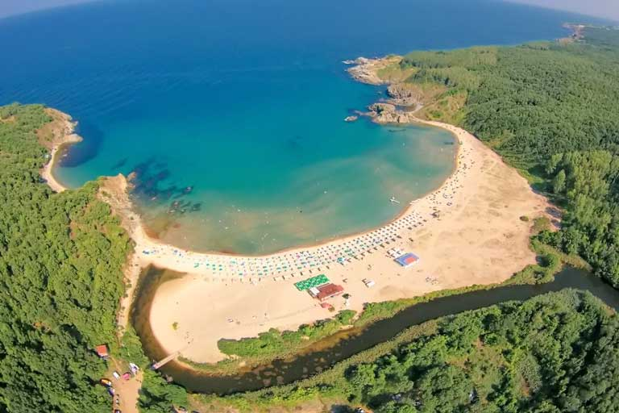
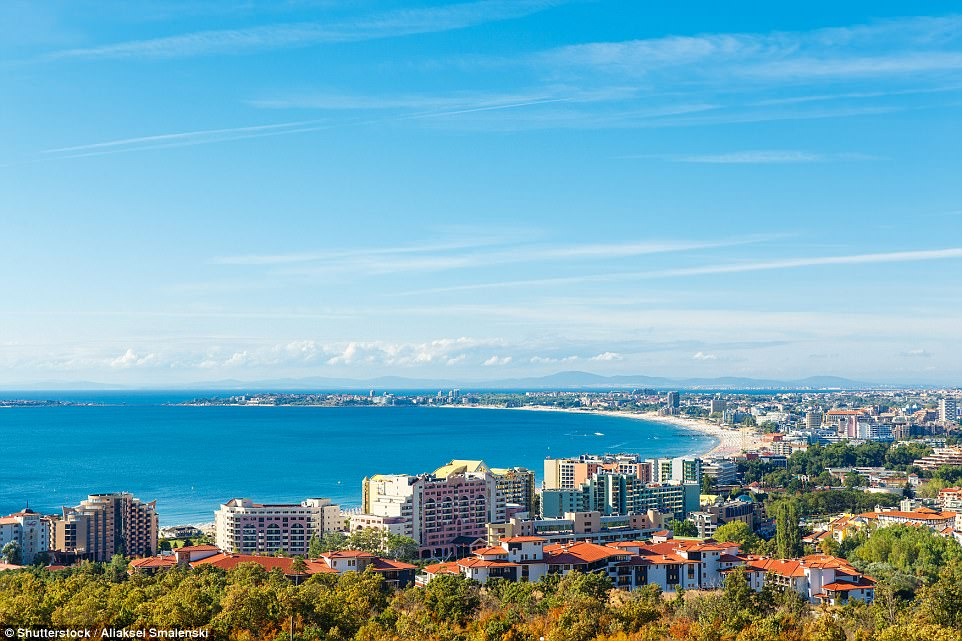
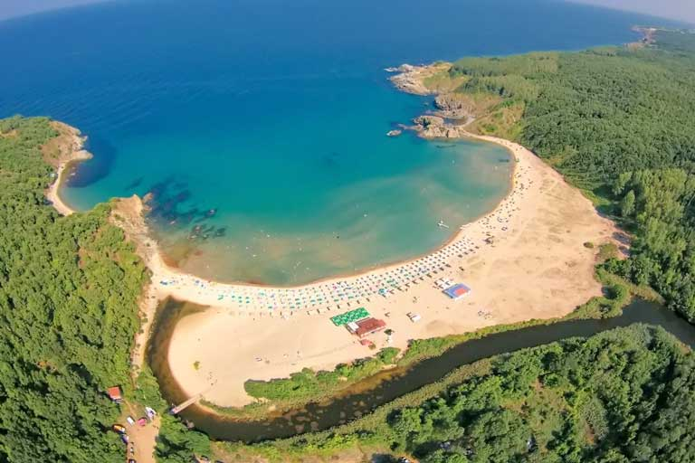
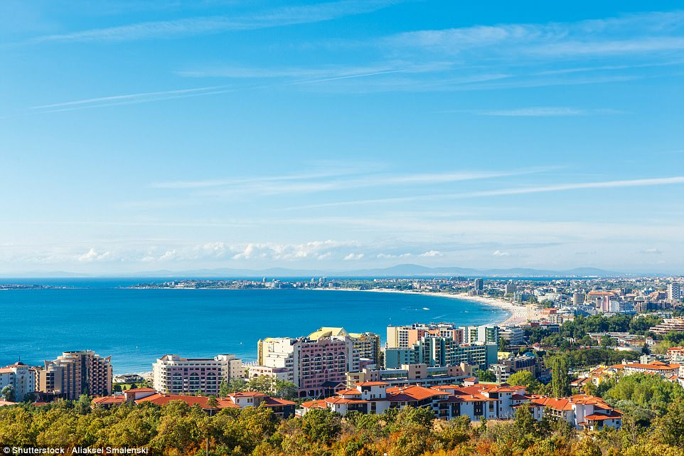

Enjoy your holiday
About Beaches in Bulgaria
Bulgaria has been earning quite the reputation as the perfect European beach destination. The Bulgarian Black Sea coast is beautiful, with rolling waves that are pleasantly warm enough to swim in. Combine that with Bulgaria’s budget-friendly prices, and everyone from a budget backpacker to luxury traveler will find they can have the perfect vacation to meet their needs. Here are our picks for the best beaches in Bulgaria, plus travel tips to help you plan your trip! The Bulgarian Riviera is on the Black Sea, which borders the country on the east. Since Bulgaria only has one coastline, we don’t call it the East Coast, but we could if we wanted to. Instead, its got the beautiful (and marketable) name the Bulgarian Riviera, but don’t fret about figuring out where it is. Any beach on Bulgaria’s Black Sea coastline is technically on the Riviera.
Sunny Beach
Perhaps the most renowned of all the coasts in Bulgaria, Sunny Beach is the largest and most lively resort in the nation. With an 8 km long stretch of fine sandy beaches, Sunny really lives up to its name, with average sunlight between May and October of 1700 hours. Packed with multi-storey resorts, billions of eateries, water sports, hired tents and some of the country’s weirdest nightclubs, this coast also possesses a slightly different, underappreciated wildlife species: most of the coast’s last natural dunes and rare plant species find a home in it. Sunny beach is just across the bay from Nesebăr ‘s historical town.
Albena Beach
Albena is a kid-friendly of the Bulgaria beaches on the coast and has water parks, bowling alleys, mini-golf courses and theme parks to prove it; that miniature-trains are one of the main modes of transport on the beach is another bit of a clue about just who governs the fiefdom. The long, pollution free white sand dips into tranquil, clear waters, which also seem to be designed for kiddos: even at 150 meters from the shoreline, the sea is no more than 1.6 meters deep. Albena ‘s appeal is increased by a free beach library. Nightlife is aimed at parents hopefully getting a moment.
Golden Sands
Golden Sands Beach in Bulgaria doesn’t believe in misleading marketing, actually has golden sand; many believe it’s the finest sand in Europe. Just over 20 km from the ancient roman town –and resort of Varna–Golden Sands is less salty than Sunny Beach, but comes second in terms of super-resorts and night life (its main drag-of-debauchery is called ‘ Party Street’). One of the top beaches in Bulgaria, it is boxed by the thickly forested Golden Sands Nature Park; healing water from the park’s hot mineral springs is also used in regional spas.
Irakli Beach
Have you forgotten your togs? Get yourself to Irakli! One of the last surviving untamed beaches in Bulgaria, the naturist Irakli is a favorite getaway for anyone who wants a bronze tan. Your credit card will appreciate the fact that free camping is mainstream here; your body will appreciate the soft sand on the coast. Irakli, with its lovely lagoon, tortoises and birdlife, is more than just a beach for campaigners, naturists and poets who enjoy its isolation: it is an emblem of the power of the people, having prevailed over great development. Many happy hipsters go down on Irakli every 30 June or ‘ July Morning,’ which commemorates the sun rising above the Black Sea.